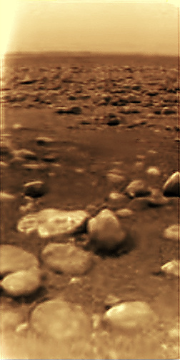
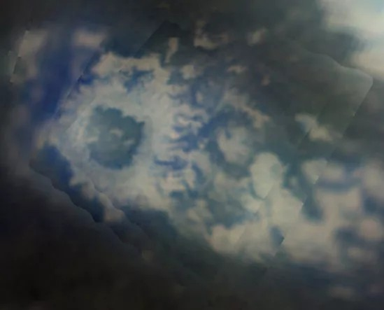
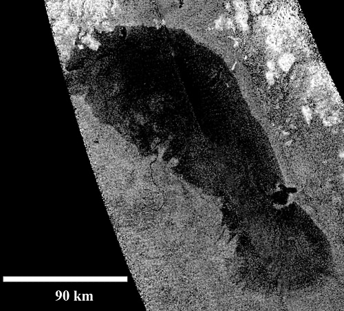
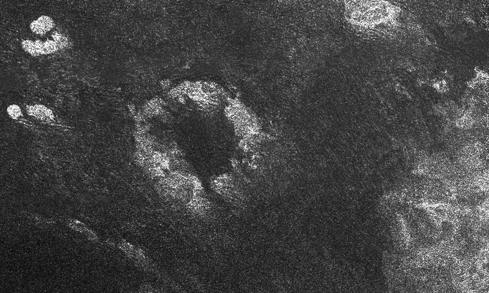
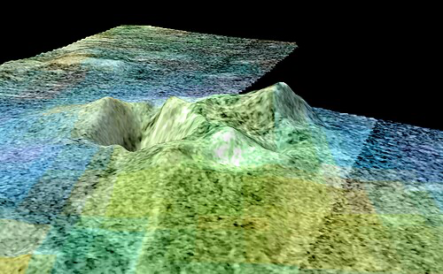
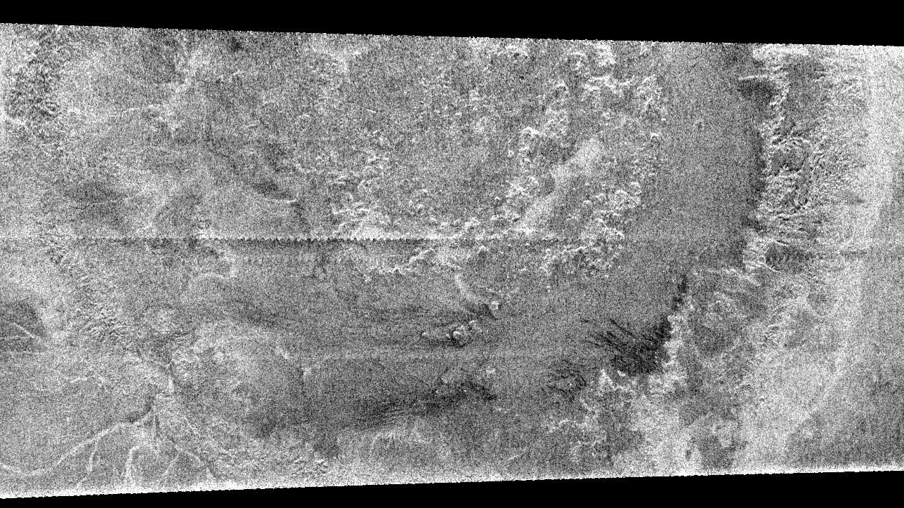
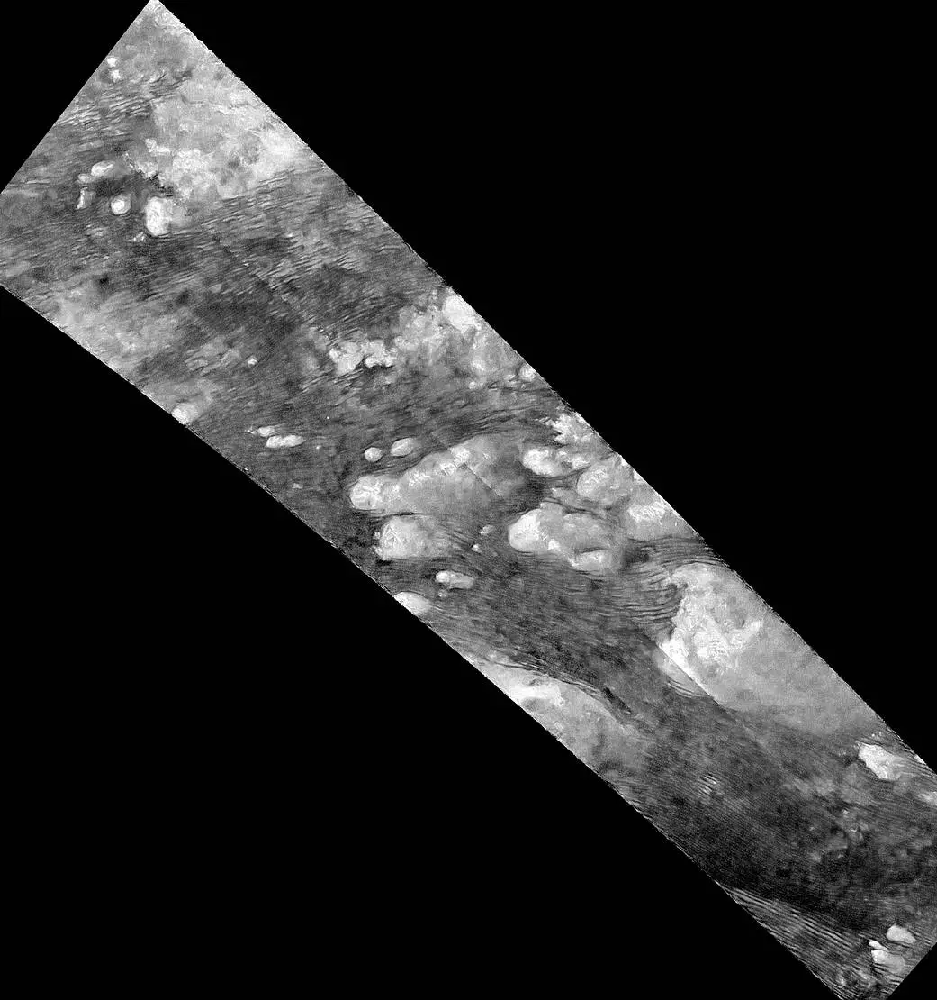

Titan
Kraken Mare · NASA/JPL-Caltech/ASI/USGS, via Wikimedia Commons
Ligeia Mare · NASA/JPL-Caltech/ASI/Cornell, via Wikimedia Commons

Huygens landing site · ESA/NASA/JPL/University of Arizona; processed by Andrey Pivovarov

Selk Crater · ESA/NASA/JPL/University of Arizona; processed by Andrey Pivovarov

Ontario Lacus · NASA/JPL-Caltech/ASI

Xanadu margin · NASA/JPL-Caltech/ASI

Sotra Facula · NASA/JPL-Caltech/ASI/USGS/University of Arizona
Hotei Regio · NASA/JPL-Caltech/ASI/USGS/University of Arizona

Menrva · Cassini radar view, February 15, 2005

Shangri-La dunes · NASA/JPL-Caltech
Mithrim Montes · NASA/JPL-Caltech
Punga Mare and Titan's northern seas · Cyril Grima, University of Texas at Austin
Vid Flumina · NASA/JPL-Caltech/ASI
Jingpo Lacus · NASA/JPL-Caltech/ASI/USGS
Drag to rotate · Use the arrow keys to explore
Hover over Titan to see coordinates
Click Titan to select coordinates
×
Titan's largest sea
Kraken Mare
A vast sea of liquid methane and ethane near Titan's north pole.
Named for the legendary sea monster, it is the largest known lake
in the Solar System. Cassini observations confirmed its liquid
surface and revealed an intricate network of basins and estuaries.
A 2014 bright ring around the shoreline suggests the sea was once
larger and has since shrunk through evaporation. NASA has also
studied a robotic submarine concept for exploring the sea.
Coordinates 68°N, 310°W
Length About 1,170 km
Estimated area 400,000–500,000 km²
Depth Moray Sinus: about 85 m; main basin: at least 100 m, possibly 300 m or more
Moray Sinus liquid About 70% methane, 16% nitrogen, 14% ethane
Discovered By Cassini in 2006; named in 2008
Sources: USGS Gazetteer of Planetary Nomenclature; Poggiali et al.
(2020); NASA/JPL Photojournal PIA18432; NASA NTRS submarine study.
×
Historic spacecraft landing site
Huygens Landing Site
On January 14, 2005, ESA's Huygens probe became the first spacecraft
to successfully land on Titan. Its descent images revealed a dry
riverbed-like landscape near the boundary of Adiri's bright
highlands and Shangri-La's dark lowlands. Rounded, pebble-like
water-ice objects and branching channels show how flowing methane
and ethane have shaped the surface. Huygens transmitted data for
about 72 minutes after landing, providing the first direct
measurements and images from Titan's surface.
Coordinates 10.3°S, 192.32°W
Location Between Adiri and Shangri-La
Landing date January 14, 2005
Mission Cassini–Huygens; ESA's Huygens probe
Temperature About −179°C
Surface Water-ice pebbles, dark plains, drainage channels and organic compounds
Sources:
NASA Science ,
NASA/JPL Photojournal ,
ESA ,
USGS and
NASA Cassini–Huygens .
×
Titan's second-largest sea
Ligeia Mare
Ligeia Mare is Titan's second-largest sea, a vast body of liquid
hydrocarbons near the north pole. Cassini radar detected the
seabed for the first time in a sea beyond Earth, measuring depths
of about 160 m along its deepest observed path. The radar signal
passed readily through the liquid, suggesting a methane-rich
composition. Rivers, including the more than 400 km-long Vid
Flumina, flow into the sea. Cassini also observed a transient
bright feature nicknamed the “magic island,” possibly caused by
waves, bubbles, or floating material.
Coordinates 79°N, 248°W
Length About 500 km
Area About 130,000 km²
Maximum measured depth About 160 m
Composition Mostly methane, with ethane and dissolved nitrogen
Name Ligeia, a siren in Greek mythology
Sources: USGS Gazetteer of Planetary Nomenclature; Mastrogiuseppe
et al. (2014); ESA (2016); NASA/JPL Photojournal PIA20021.
×
Ancient impact crater
Selk Crater
Selk is an approximately 80–90 km-wide impact crater near Titan's
equatorial dune fields, about 800 km north-northwest of the
Huygens landing site. Cassini observations show a bright rim, a
central depression, surrounding ejecta and channels shaped by
erosion. The impact may have melted Titan's icy crust, creating
temporary pools of water mixed with surface organics. Models
suggest the pools could have lasted thousands to tens of
thousands of years, creating a possible setting for prebiotic
chemistry. NASA's Dragonfly mission is planned to explore the
region and investigate its surface chemistry.
Coordinates About 7°N, 199°W
Location Near Titan's equatorial dune fields
Diameter About 80–90 km
Crater type Impact crater
Impact model About 4 km-wide icy impactor; 200–400 km³ of melt estimated
Surface features Bright rim, central depression, ejecta and drainage channels
Significance Potential interactions between liquid water and organic compounds
Future exploration NASA's Dragonfly mission
Sources:
NASA Science ,
USGS ,
Wakita et al. (2023) ,
NASA and
NASA NTRS Dragonfly landing-site study .
×
Titan's largest southern lake
Ontario Lacus
Ontario Lacus is the largest lake in Titan's southern hemisphere.
Cassini first spotted it in 2005 as a dark patch near the south
pole. In 2008, observations confirmed liquid ethane there—the
first confirmed surface liquid beyond Earth. The lake appears to
be evaporating, with a dark shoreline around its edge, and lies
within a larger basin that may once have held an ancient sea.
Coordinates 72°S, 183°W
Length About 235 km
Area About 15,000 km²; early estimates were about 20,000 km²
Maximum measured depth About 50 m
Composition About 51% methane, 38% ethane, 11% nitrogen
Name Named after Lake Ontario in North America
Sources:
USGS Gazetteer ,
Brown et al. (2008), Mastrogiuseppe et al. (2018), and
NASA Science and JPL Photojournal .
×
Titan's largest major bright region
Xanadu
Xanadu is an enormous bright equatorial region, first identified
by Hubble in 1994 and later revealed by Cassini to be one of
Titan's most geologically complex landscapes. Unlike the
surrounding dark dune fields, it has rugged mountains, deep
valleys, branching river channels and broad basins. Drainage
networks suggest methane rainfall helped shape its surface.
Tectonic deformation, erosion and possibly cryovolcanism have
modified this ancient terrain.
Coordinates About 10°S, 100°W
Dimensions About 4,000 × 2,500 km
Feature type Bright equatorial geological province
Terrain Mountains, valleys, river channels and basins
Local relief Some mountain ranges rise more than 2 km
First identified 1994, by Hubble
Name Xanadu, the legendary paradise in Coleridge's “Kubla Khan”
Sources:
USGS Gazetteer ;
Radebaugh et al. (2011);
NASA/JPL radar images of the margin of Xanadu ;
Matteoni et al. (2020).
×
Possible ice volcano
Sotra Patera
Sotra Patera is a deep depression and one of Titan's strongest
cryovolcano candidates. Nearby Doom Mons rises beside a large
flow-like feature called Mohini Fluctus. Cassini first saw this
region as a bright spot nicknamed “The Rose”; later 3D height maps
revealed its deep pit and high peaks. A 2013 study argued that
the pit, mountains and flows may have formed through
cryovolcanism, though the evidence remains debated.
Coordinates 14.5°S, 40°W
Diameter About 40 km
Depth About 1.7 km; the deepest known pit on Titan
Neighbor Doom Mons, about 1,450 m high and 70 km across
Former name Sotra Facula; renamed December 19, 2012
Name Sotra, an island in Norway
Sources:
USGS Gazetteer ;
Lopes et al. (2013);
NASA/JPL Photojournal PIA13695 ;
NASA Science ;
Inside Science; MacKenzie et al. (arXiv).
×
Possible ice-volcano basin
Hotei Regio
Hotei Regio is a large region in Titan's southern hemisphere and
one of the leading candidates for ice volcanism. Its central low
basin contains lobe-shaped deposits that some researchers
interpret as thick, slow-moving cryovolcanic flows. Bright
infrared features, mountain-ringed terrain, and channels
descending from the mountains add to the evidence. The
interpretation remains debated: the deposits may instead have
formed from surface liquids, or the bright basin may be an
evaporated ancient seabed.
Coordinates 26°S, 78°W
Size About 500 km (USGS); up to 700 km in a 2009 study
Flow thickness About 100–200 m
Surrounding mountains About 1 km high
Southern edge Hotei Arcus
Name Named in 2009 for Hotei, the Japanese god of contentment and good fortune
Sources:
USGS Gazetteer ;
Soderblom et al. (2009);
NASA: “Agreement at Hotei Regio” ;
Lopes et al. (2013); MacKenzie et al. (2014).
×
Titan's largest confirmed impact crater
Menrva
Menrva is a vast multi-ring impact basin and the largest clearly
identified impact structure on Titan. Its broad outer rim,
surrounding depressions, and raised rugged center suggest a
powerful impact that deformed the icy crust. Cassini radar images
reveal radial grooves and channels along parts of its inner walls,
while smoother areas may have been covered by later deposits.
Erosion, methane rainfall, sediment transport, and dunes have
since modified the basin. Impact models suggest the collision
could have melted subsurface ice and connected surface organics
with Titan's underground ocean.
Coordinates 20.1°N, 87.2°W
Official diameter About 392 km
Outer structure About 425–450 km across
Feature type Multi-ring impact basin
First identified 2005, in Cassini radar observations
Name Menrva, the Etruscan goddess of wisdom
Sources:
USGS Gazetteer ;
Wood et al. (2010); Williams et al. (2011); Neish et al. (2013);
“Modeling the formation of Menrva impact crater on Titan” (2021);
Cassini view and references .
×
One of Titan's largest equatorial sand seas
Shangri-La
Shangri-La is an immense dark equatorial region dominated by
parallel organic sand dunes. Cassini radar revealed thousands of
long, linear ridges, resembling some of Earth's largest deserts.
The dunes are thought to form from solid organic particles created
in Titan's atmosphere and reshaped by powerful winds. They bend,
split, and gather around mountains and other obstacles, and stop
at the bright highlands of Xanadu. Their orientations provide
clues about Titan's winds, sediment transport, and changing
atmospheric circulation.
Coordinates 20°S–20°N, 150–200°W
Dimensions About 2,000 km across
Feature type Equatorial sand sea and dune field
Dune spacing Typically about 2–3 km
Dune material Solid organic particles, likely hydrocarbon- and nitrile-rich
Nearby terrain Xanadu and Belet
Name The fictional Himalayan paradise from James Hilton's Lost Horizon
Sources:
USGS Gazetteer ;
Lorenz et al. (2006); Radebaugh et al. (2013); Lucas et al. (2019);
NASA/JPL: Flowing Dunes of Shangri-La ;
NASA/JPL Photojournal PIA08971.
×
Titan's tallest known mountain range
Mithrim Montes
Mithrim Montes is an equatorial mountain range between the dark
dune fields of Shangri-La and the bright terrain of Xanadu.
Cassini radar revealed rugged ridges rising above the surrounding
plains. Their steep slopes and elongated form may reflect
tectonic compression and deformation of Titan's icy crust. The
mountains are thought to be made mostly of water ice beneath
atmospheric organic deposits, and their height provides clues
about Titan's crust and geological history.
Coordinates About 3°S, 126°W
Highest peak About 3,337 m
Feature type Mountain range
Terrain Rugged ridges, steep slopes and elevated peaks
Likely composition Water ice with organic surface deposits
Nearby terrain Shangri-La and Xanadu
Name The Misty Mountains (Mithrim) from Middle-earth
Sources:
USGS Gazetteer ;
Corlies et al. (2017);
NASA/JPL radar view of Titan's tallest mountains ;
Lorenz et al. (2013).
×
Titan's northernmost sea
Punga Mare
Punga Mare is the third-largest body of liquid on Titan and lies
closest to the north pole. At about 61,000 km², its area is roughly
comparable to Lake Michigan (about 58,000 km²). In 2015, Cassini
radar echoes from the seabed measured a maximum depth of about
110 m along the radar track. The signal indicated liquid composed
mostly of methane and nitrogen, with little or no ethane. A radar
pass also crossed channels and flooded areas connecting Punga
Mare with Kraken Mare. Measurements of all three northern seas
suggest very small waves, about 1 cm high and 20 cm long.
Coordinates 85°N, 340°W
Length About 380 km
Area About 61,000 km²
Maximum depth measured About 110 m
Composition Mostly methane and nitrogen; little or no ethane
Named In 2008, after Punga, a figure in Māori mythology
Sources:
USGS Gazetteer of Planetary Nomenclature ;
Mastrogiuseppe et al. (2018), “Cassini radar observation of Punga Mare and environs”;
Hayes (2016), “The Lakes and Seas of Titan”;
Grima et al. (2017), doi:10.1016/j.epsl.2017.06.007;
Sci.News (2017), “Hydrocarbon Seas on Saturn’s Moon Titan are Very Calm.”
×
Titan's “mini Nile”
Vid Flumina
Vid Flumina is a river network more than 400 km long that flows
into Ligeia Mare. Cassini radar imaged it in September 2012, and
its detailed view was described as a miniature Nile—the first
time a large river system had been seen in such detail beyond
Earth. The river carries liquid methane and ethane across a
surface made mostly of water ice. Its dark, smooth radar
appearance indicates liquid, and its relatively straight course
may follow a fault. Later analysis found branches running through
flooded canyons less than a kilometer wide, with steep walls up
to 570 m high. The canyons may have formed as the land rose, the
level of Ligeia Mare fell, or both. Its name comes from Vid, one
of the icy rivers in Norse mythology.
Coordinates 73°N, 242.5°W
Length More than 400 km
Flows into Ligeia Mare
Canyons Less than 1 km wide; walls up to 570 m high
Imaged September 2012, by Cassini radar
Named In 2013, after Vid in Norse mythology
Sources:
NASA/JPL: Cassini Spots Mini Nile River on Saturn Moon ;
NASA Science PIA16197 ;
Poggiali et al. (2016), “Liquid-filled canyons on Titan”;
ScienceDaily (2016) ;
USGS Gazetteer of Planetary Nomenclature.
×
The lake that flashed in the sun
Jingpo Lacus
Jingpo Lacus is a large lake in Titan's north polar region, just
west of Kraken Mare. On July 8, 2009, Cassini's infrared
spectrometer detected sunlight glinting off its surface—the first
sunlight reflection seen from a lake on another world. The glint
confirmed liquid in Titan's northern lakes as sunlight returned
to the north after nearly 15 years of darkness. Its sharp
reflection also showed that the surface was exceptionally calm:
waves had slopes no greater than about 0.15°, roughly a hundred
times flatter than Earth's ocean waves.
Coordinates 73°N, 336°W
Length About 240 km
Area About 20,800 km²
Notable event First observed lake glint beyond Earth, July 8, 2009
Surface waves Slopes no greater than about 0.15°
Named In 2010, after Jingpo Lake in China
Sources:
USGS Gazetteer of Planetary Nomenclature ;
NASA Science PIA12481: Reflection of Sunlight off Titan Lake ;
Barnes et al. (2011), “Wave constraints for Titan's Jingpo Lacus and Kraken Mare from VIMS specular reflection lightcurves.”